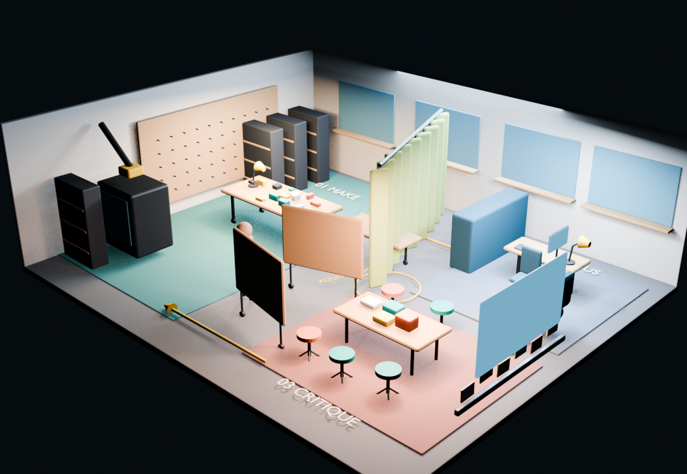
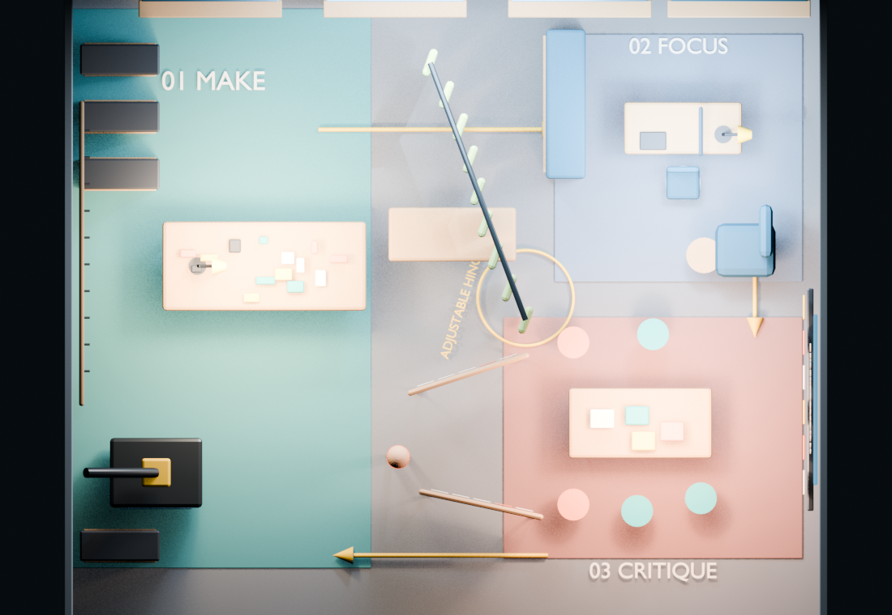
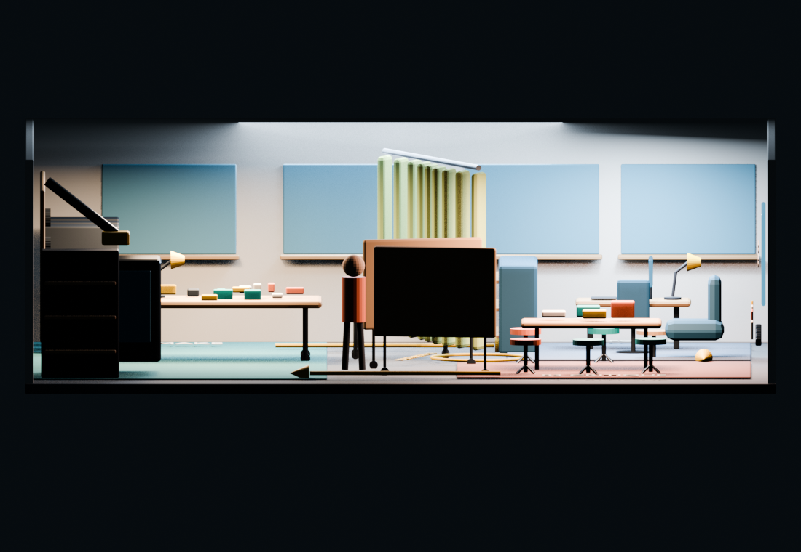
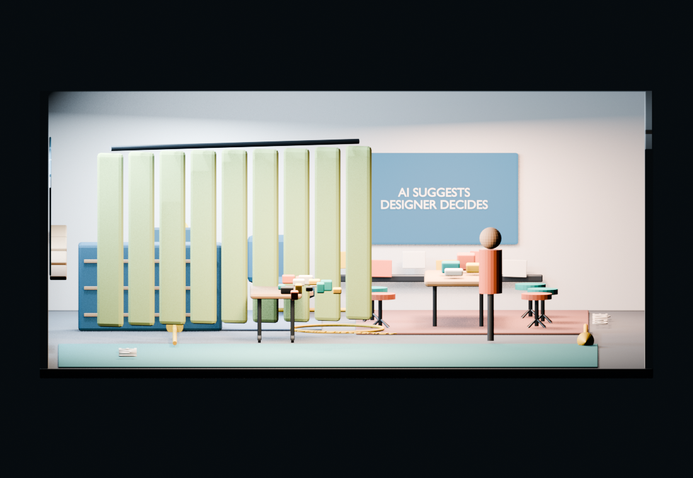
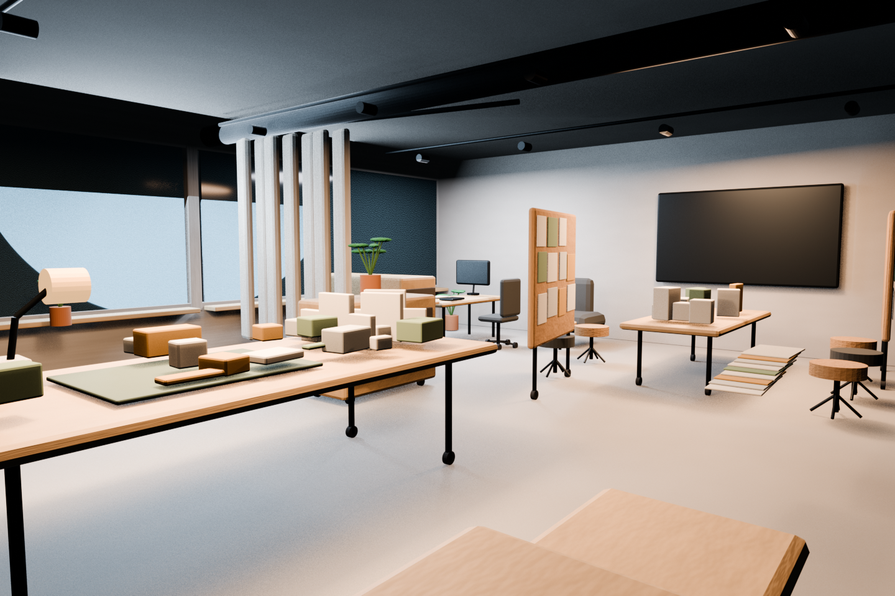
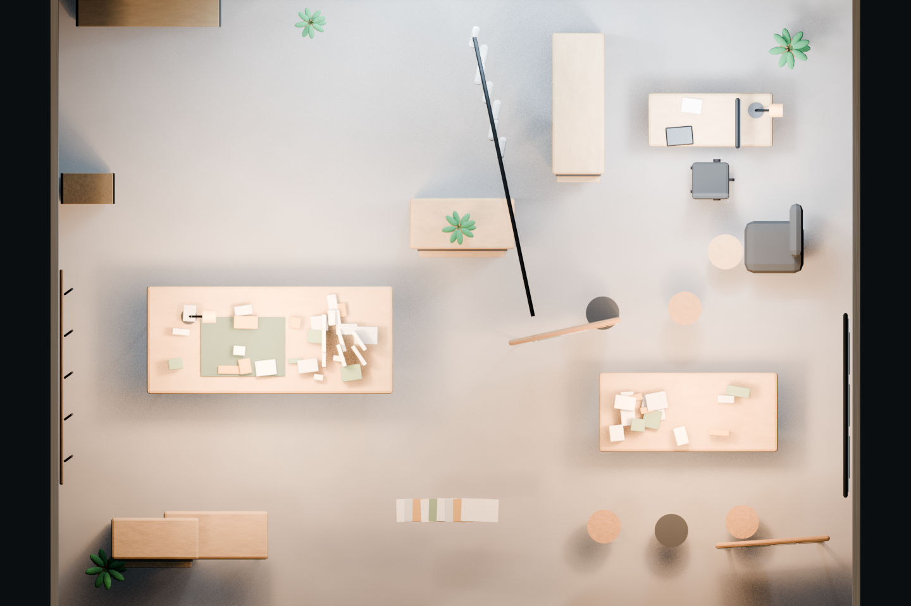
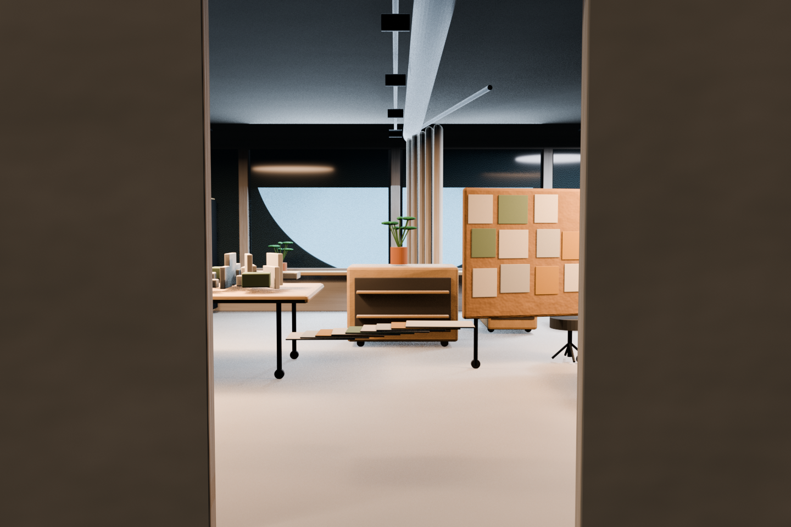
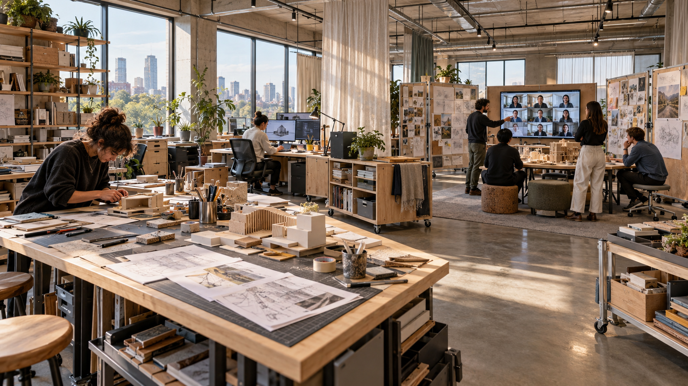

Project 02Week 4 · Spatial design
FUTURE
STUDIO
Designer’s dream studio · 2035
A flexible workplace where making, focused work, and critique overlap—and where AI remains visible as one input to human decisions.

01 / THE IDEA
THE ADJUSTABLE
HINGE.
The studio is conceived as one connected field rather than three isolated rooms. A central rail, mobile tables, pin-up boards, and a curtain allow the space to change with the work.
Make occupies the west edge, focus sits behind an adjustable buffer, and critique gathers around a hybrid screen and physical decision rail.

02 / SPATIAL ORGANIZATION
FROM PLAN
TO EXPERIENCE.



03 / DEVELOPED ENVIRONMENT
ONE ROOM.
MANY MODES.



04 / STUDIO IN USE
PHYSICAL EVIDENCE
MEETS DIGITAL INPUT.

05 / CAMERA WALKTHROUGH
MOVE THROUGH
THE PROPOSAL.
AI SUGGESTS
DESIGNER DECIDES